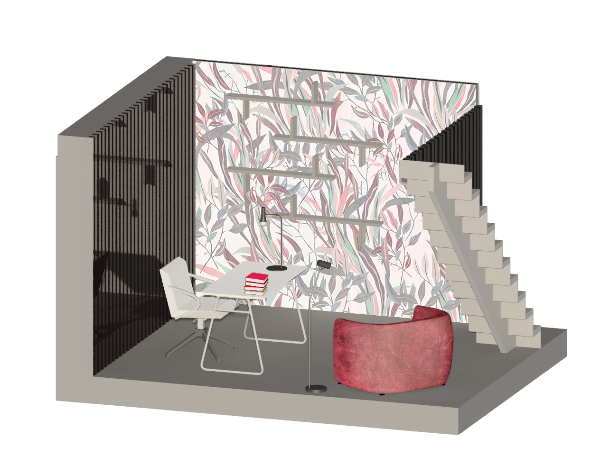
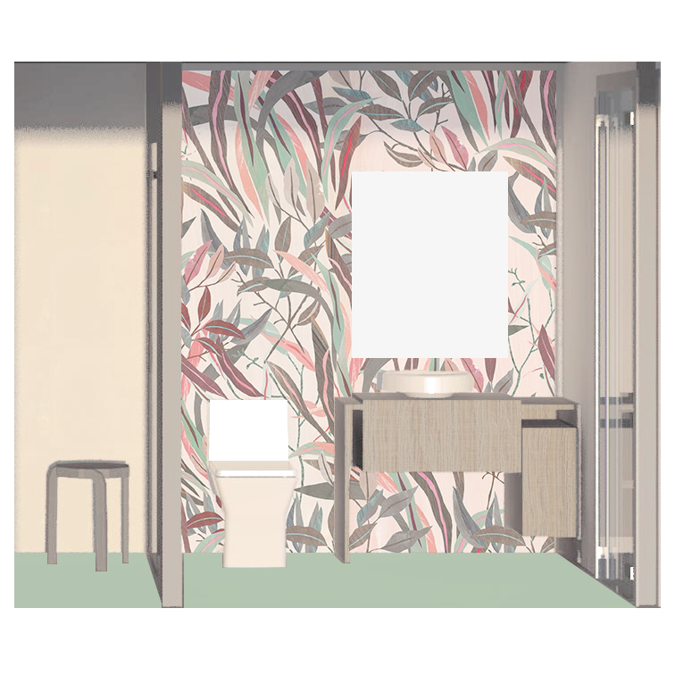
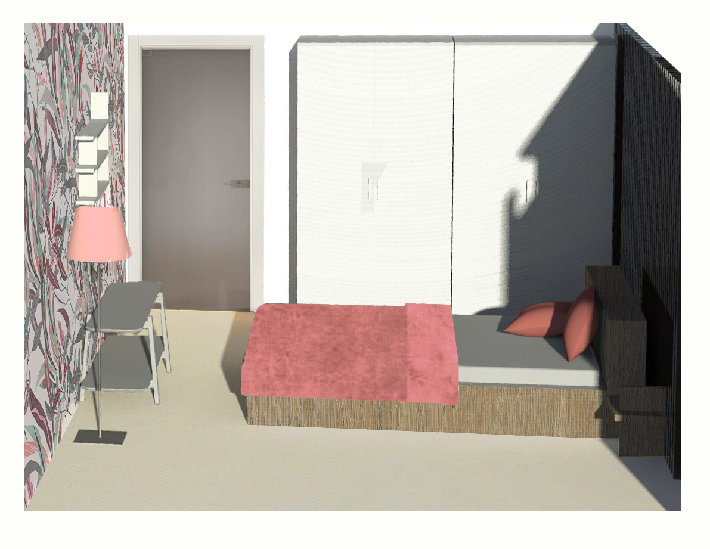
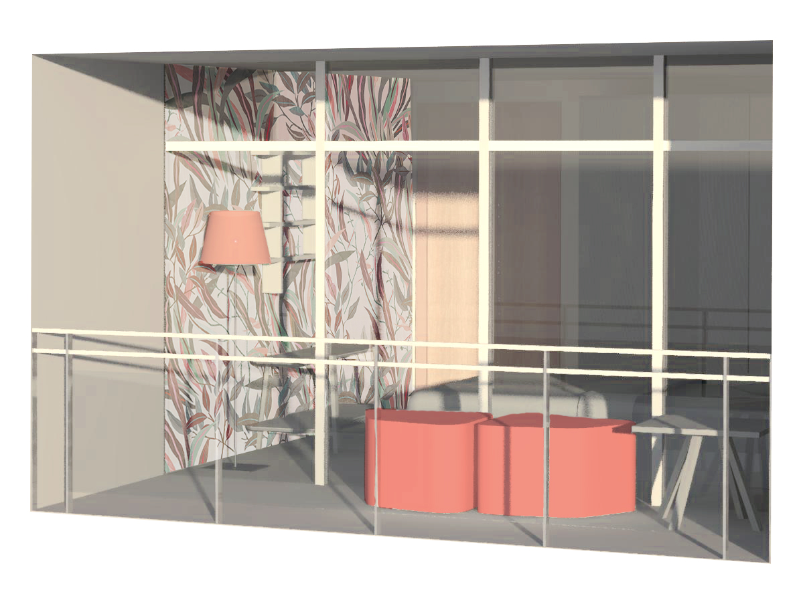

Piano -1
Il piano -1 si divide in due parti, una aperta, quella dello studio, e una parte chiusa e privata, il bagno e la camera da letto.
Studio
Lo studio composto da pochi elementi prevede una zona lavoro dotata di sedia e scrivania e un angolo lettura con una poltrona e mensole.

Bagno
Il piccolo bagno è composto da lavabo,wc e box doccia.

Camera
La camera da letto riprende le mensole presenti negli altri ambienti, e si compone di letto kingsize con comodini integrati, armadiature.

Ballatoio
Sia la camera che lo studio hanno accesso al ballatoio, che si compone di due puof e un tavolino. Il parapetto è composto da pannelli di vetro in modo da permettere una vista quanto più ampia del panorama.
